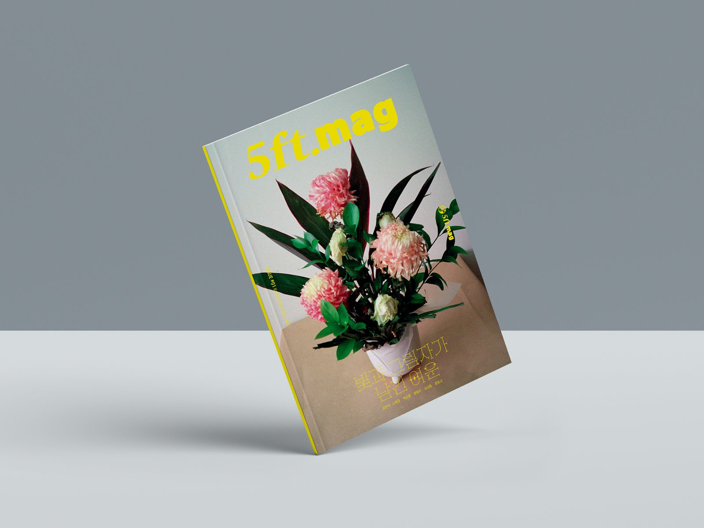
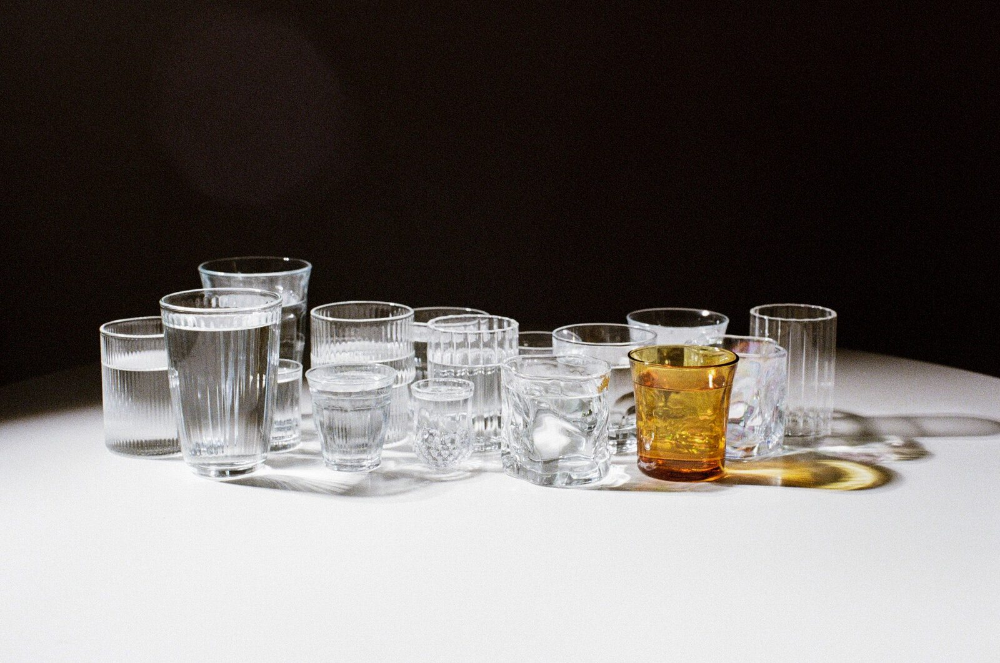
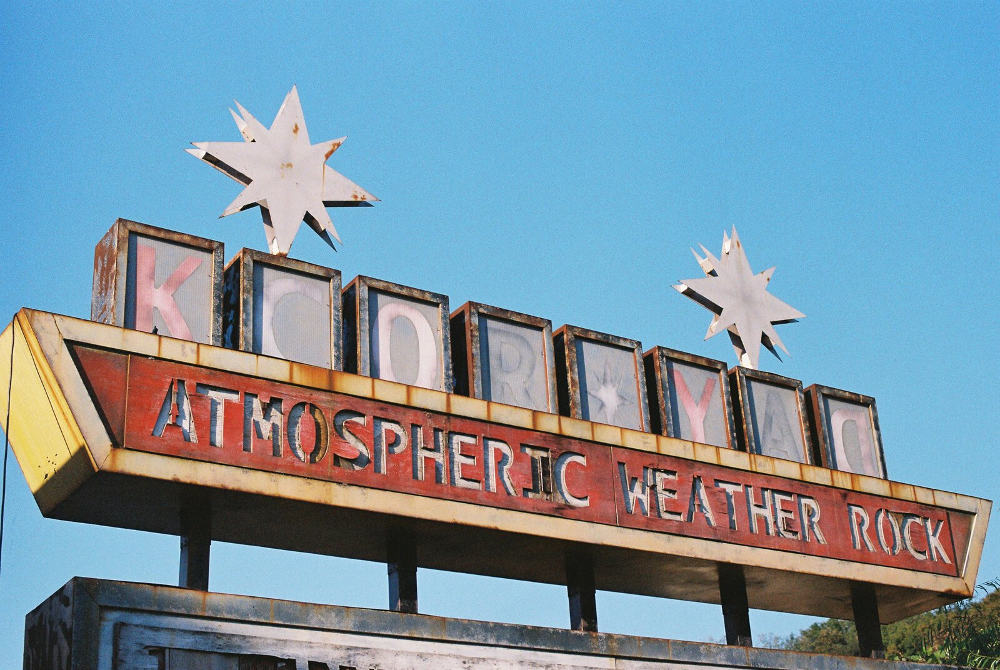

"필름 한 롤의 길이가 정확히 5ft, 약 1.5미터라는 사실을 알고 계신가요? 35mm 필름, 딱 36컷이 들어가는 그 길이에서 매거진의 5ft를 가져왔습니다."
오랜 준비 끝에 마침내 종이 위에 새겨진 5ft.mag의 정식 창간호. 같은 필름으로 찍어도 사람과 지역에 따라 전혀 다른 색과 이야기가 담긴다는 것 — 그 매력을 한 권 안에 펼쳐냈다. 첫 호에 무엇이 담겼는지 살짝 들여다본다.
창간호의 테마 — 빛과 그림자가 남긴 여운
매거진의 표지에 적힌 한 줄, "빛과 그림자가 남긴 여운". 창간호의 모든 사진과 글이 이 주제 아래 모였다. 필름의 낭만적이고 서정적인 매력, 사람과 공간이 만나 만들어내는 감정의 파장을 다양한 각도로 풀어낸 것이 이번 호의 핵심이다.
창간호에 사용된 필름은 Kodak Ultramax 400. 흔히 "평범한 소비자용 필름"으로 분류되지만, 그 안에 담긴 색과 결을 자세히 들여다보면 그렇게만 부르기 어려운 필름이다.
여섯 명의 시선
창간호에는 세 명의 사진작가, 두 명의 참여작가, 그리고 한 명의 글 기획자가 함께했다. 각자 다른 자리에서, 같은 주제를 자기만의 방식으로 풀어낸다.
여섯 명, 각기 다른 답. 같은 주제 아래에서 어떻게 이렇게 다른 풍경이 펼쳐지는지는 책장을 한 장씩 넘기면서 직접 확인해주시길.

본문 펼침면 미리보기
매거진 안쪽 두 페이지만 살짝 공개한다. 같은 필름으로 찍었지만 전혀 다른 결의 사진들이다.

박순렬 작가는 매거진에서 이렇게 적었다. "내게는 항상 사람이 중심이어야 했다. 나에게 있어 사진 속 '빛'은 곧 '사람'이었다. 반면에 '그림자'는 사람이 아닌 것들이었다." 생명 없는 컵, 굴절된 빛, 그 안에 생겨난 그림자들. 정물 같은 차분한 풍경 속에 작가의 시선이 고요히 흐른다.

노애경 작가는 한때 화려하던, 지금은 버려진 놀이공원을 따라간다. "습도와 시간의 흐름이 만들어낸 변형 속에서도, 이곳은 여전히 반짝이던 기억을 간직한 채 존재합니다." 낡았지만 사라지지 않은, 과거와 현재가 공존하는 공간을 거닐며 작가는 시간과 사물의 본질에 대해 묻는다.
고시텔, 그 너머의 작가
이번 호의 또 다른 큰 축은 인터뷰다. 사진 전문 출판사 '눈빛사진가선'의 사진집 〈고시텔〉로 데뷔한 작가 심규동. 좁은 공간에서 살아가는 사람들의 모습을 정면으로 응시한 그의 작업은 한국 다큐멘터리 사진의 한 장면을 차지한다. 5ft.mag은 그를 만나 〈고시텔〉, 신작 〈1인가구〉, 그리고 빛에 대한 그만의 철학까지 긴 대화를 나눴다.
창간호 콘텐츠 한눈에
- ● Photo — 노애경, 박순렬, 장형수
- ● Essay — 김현아 〈낭만 조작 아이템〉 · 〈별일없음에 행복을 느끼는 이유〉, 윤동규 〈빛과 그림자가 남긴 여운〉
- ● Interview — 심규동 작가
- ● Camera Review — Pentax 17 (BRISNAP TV)
- ● Film Review — Kodak UltraMax 400 (Film Social Club)
다음 호 예고
당신의 장소는 어떤 장르인가요?
일상의 따스함을 포착하는 사진작가 신노구치(Shin Noguchi)와의 인터뷰가 준비됩니다.
2호는 Cinestill 800T로 함께한다. 야경과 가로등의 붉은 헐레이션으로 사랑받는 영화용 필름. 카메라 리뷰 코너에서는 Ally Camera 강혜원 대표와 함께 ihagee exakta, zeiss ikon contessa, voigtlander vitessa 500까지 — 유니크한 독일 카메라 세 대를 다룬다. 새로운 작가, 새로운 빛, 새로운 이야기. 그게 우리가 매 호마다 약속하는 것이다.
그러기 위해 5ft.mag은 혼자 만족하는 사진이 아니라, 더 많은 이들과 함께 뜻을 모아 만들어 가는 상생의 매거진을 꿈꾼다.
지금 바로 만나보세요
네이버 스마트스토어에서 실물 인쇄본을 만날 수 있습니다.